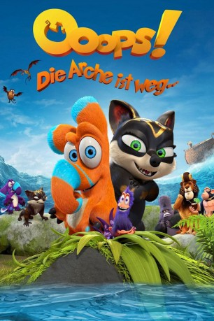

gesehen am 29.12.2015
gesehen am 29.12.2015Alternativ: All Creatures Big and Small (Englischer Titel) gesehen am 29.12.2015
 
 IMDB-Wertung: 5.8 / 10
IMDB-Wertung: 5.8 / 10  Metascore:
Metascore: 
Nestrier Finny, ein Vegetarier mit knallorangefarbenem Fell und einem Rüssel wie ein Elefant, und Grymp Leah, Jägerin und Fleischfresserin zwischen Wolf und Hyäne, verpassen die Arche, die gerade mit sämtlichen Tieren an Bord abgelegt hat, um vor der Sintflut zu flüchten. Während sich die Eltern an Bord über ihren Nachwuchs Sorgen machen, werden die so gegensätzlichen Jungtiere langsam Freunde in ihrem verzweifelten Bemühen, es doch noch irgendwie aufs rettende Schiff zu schaffen.
Jahr: 2015
Dauer: 87 Minuten
FSK: 6
Land: Deutschland Studio: Senator FilmTonspuren: DTS - ,
Untertitel: Deutsch,
Auflösung: 1080p (1920x1040) Größe: 5294 MB
Genre: Komödie, Abenteuer, Animation/Trick
Regisseur: Toby Genkel, Sean McCormack
Drehbuch: Richie Conroy, Toby Genkel, Mark Hodkinson, Marteinn Thorisson
Soundtrack: Stephen McKeon
Darsteller:
 Franciska Friede als Baby Hippopotamus #1 / Songbird #1
Franciska Friede als Baby Hippopotamus #1 / Songbird #1 Katja Riemann als Kate, Germany
Katja Riemann als Kate, Germany Martin Sheen als Lion
Martin Sheen als Lion Chris Evans als Stayput
Chris Evans als Stayput Christian Ulmen als Dave, Germany
Christian Ulmen als Dave, GermanyDatei: X:\Kinder Filme (N-Z)\Ooops! Die Arche ist weg... (2015, FSK6, 1920x1040).mkv seit 25.12.2015
Festplatte: Kinder-Filme+Trick
 Es gibt insgesamt 87 Filme in der Gruppe 'Kinder Filme (N-Z)'
Es gibt insgesamt 87 Filme in der Gruppe 'Kinder Filme (N-Z)'